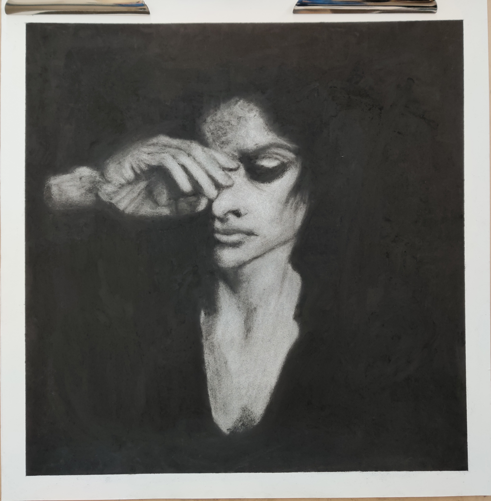

Artworks

Peking University
September 4th, 2019 edited
This image was created by Photoshop at the beginning of the Semester. In fact, this image was the photo, but edited with the Filters opitions. This image was the started of the photoshop with use the offical tools(I think). On that time, I was studying the pictures with filter tools turn to the anime style. I used curve, exposure, virbate, to change the light and color to brighter, then use the dry brush and oil paint filters to change the style of looking.
in fact, this image was beyond my imagination after I edited. This work has the great impression for me. For me, this is my favorite of the whole portfolio.

Refelction World Under the Water
September 23rd, 2019 edited
This image was based on the Glitch Art Assignment: Use the RGB channel to seperate red, green and blue site.
I used the Filter tools to transfer the image to the animal style, then I copy the photo to make the water reflection and change the RGB channel with different RGB colors. And on the final step, use the Audacity to let image change to the glitch art. On the other hand, for the Personal Reason, I did not use audacity a lot to edit the image bacasue I do not want to break the original image a lot. I like capture something feels very perfect, insead of messed up.

Enkidu
Nov 6th, 2019 edited
Enkidu (𒂗𒆠𒆕 EN.KI.DU3, "Enki's creation"), s a central figure in the Ancient Mesopotamian Epic of Gilgamesh. Enkidu was formed from clay and water by Aruru, the goddess of creation, to rid Gilgamesh of his arrogance.
The above juest cited by the Wikipedia. On this image, is the character is also called Enkidu. Yes, the same character, based on same backround of Ancient Mesopotamian story. However, this character was made by Fate Grand Order, the current anime technonloy.
This image is not the real art. It was created by "Processing", and I drew it line by line, shape by shape with coding. it looks nice, and I spent lots of time and over 1000 lines of coding to finish tat. It was the huge work.

De Profundis
November 14th, 2019 edited
This artwork is the assignment of the art course ANI 11. and it was traced by Ingolf Timpner's work in 1997.
The main tool of this art work is eraser. Yes, all white space was made by erasers. and the black background was made by Char-Kole. I spent over 3 eraser to finsih this artwork, and spent over 40 hours to complete it. This is the rally horrible of the work processing. Althought I staified this artwork, I will not do that anymore unless the assignment request.

Under The Moon
December 8th, 2019 edited
This Artwork is the Final one of this portfolio, and this on also is the final work in this class.
The inspiration of this artwork is want yo make something feels fantasy. However, it needs lots of art skill if we want to make the very fantasic fantasy image or artwork with drawing, such as the digital drawing. Fortunately, Photoshop can make this happen easier. I found the tutorial which can make 2d landscape transfer to the 3d style. This is the very fantasic image with processing, but it needs to undertsand the skill and hotkeys of each tools because it's the huge work.